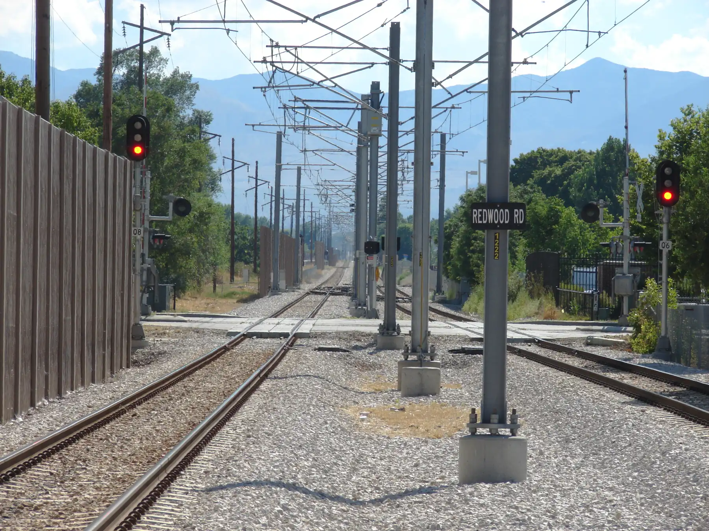

West Jordan, Utah · 7679 S Redwood Rd
Locksmith in West Jordan, on Redwood Road.
Superior Locksmith is a locksmith in West Jordan, Utah, at 7679 S Redwood Rd. New keys, a new home, a lock that’s worn out: call and talk to a locksmith.

Redwood Rd crossing, West Jordan · An Errant Knight, CC BY-SA 4.0, via Wikimedia Commons
Locksmith
The right fix for the lock you have.
- Phone
- 801-565-0226
- West Jordan
- 7679 S Redwood Rd
West Jordan, UT 84084 - Trade
- Locksmith
Superior Locksmith works from Redwood Road in West Jordan. Most lock jobs come down to one question: keep the lock and change the key, fix what’s there, or put in something new.
The picker below walks through common situations and what each option means, so you know what to ask for when you call.
Rekey, repair or replace?
What’s going on with your lock?
Pick the situation closest to yours. We’ll explain the option that usually fits and what to ask about.
General guidance, not a quote; a locksmith will look at the actual lock. Grade information: Builders Hardware Manufacturers Association (BHMA) standards A156.2 and A156.39.
Lock grades
What the grade on the box means
BHMA sets the tests
The Builders Hardware Manufacturers Association publishes the ANSI/BHMA standards that locks are graded against.
Grade 1: a million cycles
Under A156.2, a Grade 1 bored lock must pass one million opening-and-closing cycles with a 10 lbf load.
Residential Grade A
A156.39 covers residential locksets: Grade A must pass 400,000 cycles and eleven strength and security tests.
Check the listing
BHMA keeps a Certified Products Directory, so you can confirm a specific product’s grade.
Source: BHMA, A156.2-2022 Locks and Latches and A156.39-2025 Residential Locksets and Latches highlights (buildershardware.com).
Questions
Good to know
From the blogLock grades explained: what BHMA ratings actually testWhat BHMA grades test, from cycle counts to strength, and how to check a lock’s rating.
Read it01Where is Superior Locksmith?
7679 S Redwood Rd, West Jordan, UT 84084.
02How do I reach you?
Call 801-565-0226, or send the form on the contact page.
03What’s the difference between rekeying and replacing?
Rekeying changes the inside of the lock so old keys stop working and a new key does, while you keep the lock itself. Replacing swaps the whole lock, which makes sense when it’s damaged or you want a different grade or style.
04What does a BHMA grade mean?
It means the lock was tested to an ANSI/BHMA standard. For example, Grade 1 locks under A156.2 must pass one million cycles; residential Grade A locks under A156.39 must pass 400,000.
Contact us
Keys or locks in West Jordan? Call Superior.
Call Superior Locksmith at 801-565-0226. 7679 S Redwood Rd, West Jordan, UT 84084.
Contact us